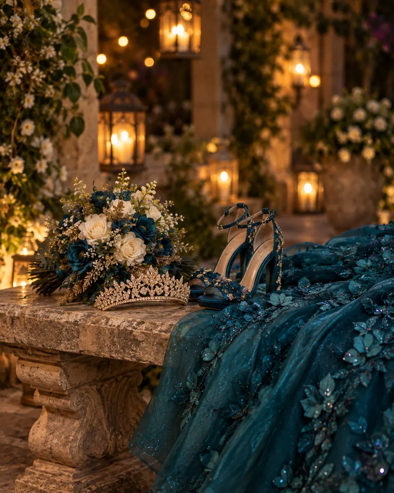
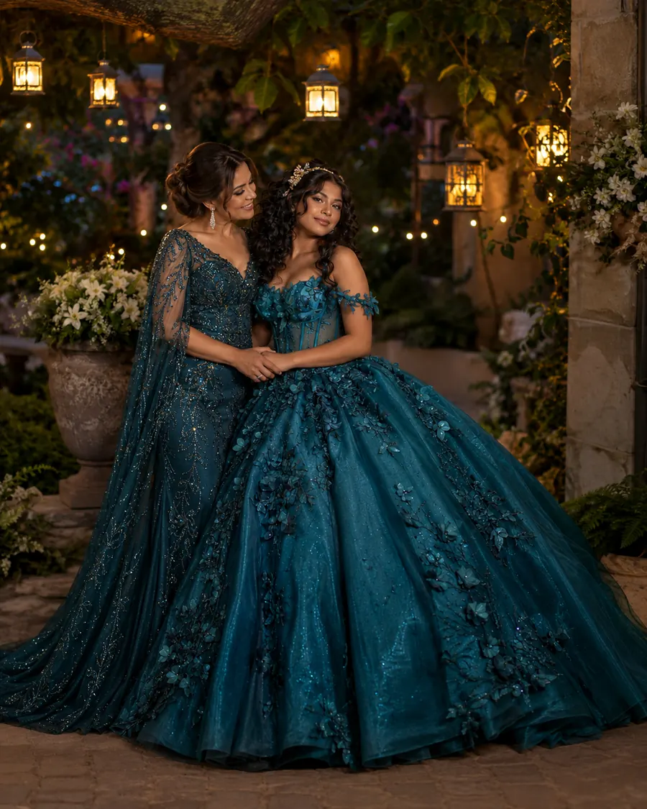

XVMis
Sábado 13 de marzo de 2027
Hay noches que se quedan para siempre. Quiero que esta la vivas conmigo.
Faltan
Agregar al calendario

Con la bendición de
Mis padres
Alejandro Montaño Ruiz
Mariana Serrano de Montaño
Mis padrinos
VelaciónJorge y Lucía Serrano
AnilloRicardo Montaño
Última muñecaPaola Ruiz
BrindisFamilia Ortega
La noche
Así la viviremos
- 6:00 PMMisa de acción de graciasParroquia de San José
- 8:00 PMRecepción en el jardín
- 9:00 PMVals
- 9:45 PMCena
- 11:00 PMFiesta bajo los faroles

¿Dónde?
Te espero aquí
Código de vestimenta
Formal de noche
El jardín tiene pasto: te recomendamos tacón grueso. El verde petróleo es solo para la quinceañera.
Mesa de regalos
Tu presencia es el regalo
Si además quieres tener un detalle conmigo, aquí tienes las opciones.
LiverpoolEvento 51872043
→
Lluvia de sobresBBVA · 0123 4567 8901 2345 67
Confirmación
¿Nos acompañas?
Tu lugar es importante para mí.
 Hecho por Savey
Hecho por Savey